2 Problems with the Fitch algorithm
The Fitch algorithm (Fitch, 1971) counts changes in a character. It assumes that the character is applicable throughout the tree. This assumption does not lead to error if:
The character is inapplicable in fewer than three tips; or
In the trees being considered, applicable and inapplicable tokens occur in distinct regions of the tree (Maddison, 1993).
2.1 Red tails, blue tails
Maddison (1993) provided the following example to demonstrate the problem encountered by the Fitch algorithm when inapplicable characters were present.
Consider the following tree, each node of which is supported by a number of characters. Tail colour (illustrated; 0 = red, 1 = blue) has not yet been considered, but has the potential to resolve the polytomy on the left hand side (bold).
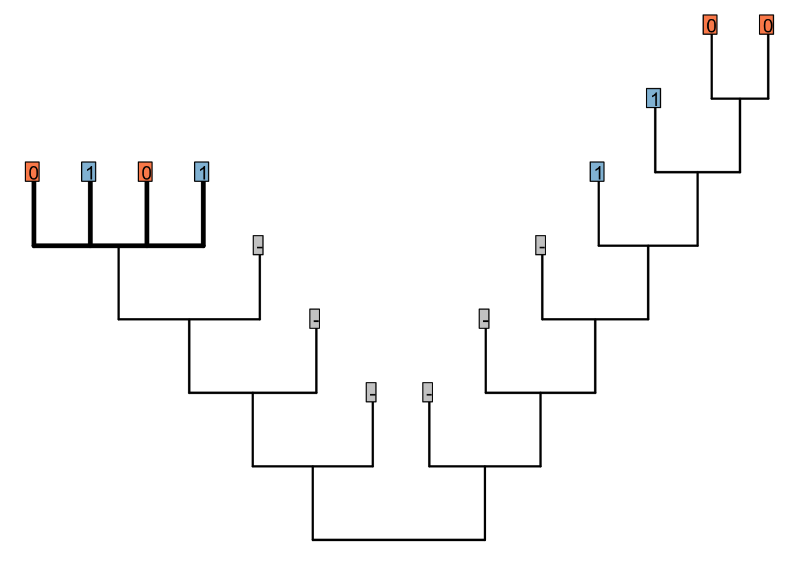
In the bold region, tail colour should group the red-tailed tips together, and the blue-tailed tips together, but does not establish whether the ancestor of the left-hand tail-bearing clade had a red or blue tail.

Figure 2.1: Possible resolutions for bold region of tree. Good resolutions imply one change; bad ones, two.
2.2 Reductive coding
Under reductive coding, the tail and its colour are described in two character statements:
Tail: (0), absent; (1), present.
Tail, colour: (0), red; (1), blue; (?), inapplicable.
Consider the following two trees, each of which receives a score of two for the first character (presence of tail). The score of the second character (tail colour) is not as desired.
The Fitch algorithm will prefer trees in which the left-hand tail-bearing clade has a blue tail, simply because the right-hand tail-bearing clade ancestrally did.
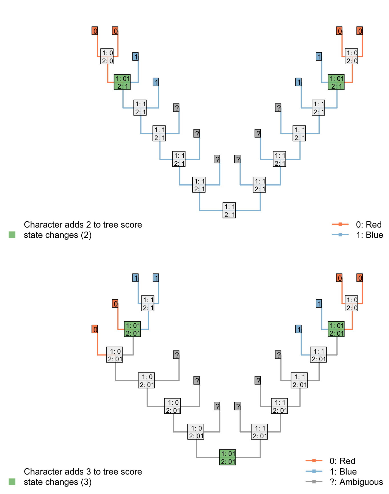
Notice the additional step reconstructed at the root node: the Fitch algorithm reconstructs a change in tail colour in a taxon that doesn’t have a tail!
This reconstruction is not logically consistent.
2.2.1 An exception
If the parent character can parsimoniously be reconstructed as present at every internal node in a single unbroken region of a tree, and nowhere else, then reductive coding does work successfully. Reductive coding may therefore be appropriate if only a subset of all possible trees are under consideration, and is always (i.e. for all trees) appropriate if a character exhibits fewer than three inapplicable tokens.
2.3 Inapplicable as an extra state
An alternative is to code the inapplicable token as an extra state:
Tail: (0), absent; (1), present.
Tail, colour: (0), red; (1), blue; (2), inapplicable.
This seems to resolve the problem case that we encountered with reductive coding:
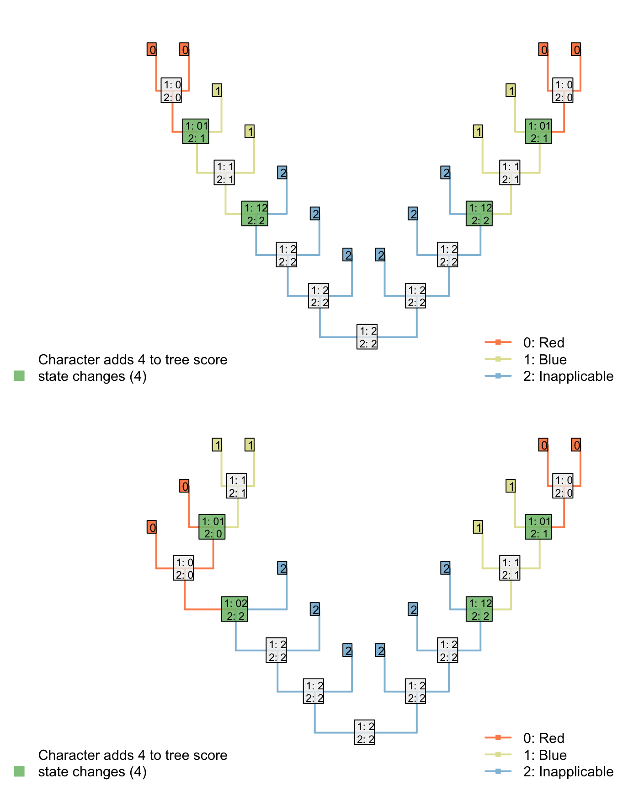
Both trees now receive the same score for the ‘tail colour’ character, which contributes four steps. Two of these steps, however, correspond to steps that have already been counted in the parent character, reflecting the two gains of a tail.
Although this reconstruction is logically consistent, the gain (or loss) of the tail is now reflected in two characters – characters are not independent of one another.
The outcome is that each ontologically dependent character serves to increase the weight of its parent character. The loss of a tail, for example, would incur a cost of one step in the tail character and one step in each ontologically dependent character, even though it represents a single evolutionary event.
2.4 A single multi-state character
A different approach is to use a single character to denote both the presence and the colour of the tail:
Tail: (0), absent; (1), present, red; (2), present, blue.
This seems to resolve the problem case that we encountered with reductive coding:

However, we now have a situation where the gain/loss of a tail is afforded the same weight as a change in tail colour. We ought to prefer a tree where the tail evolved once (and changed colour) to one where it evolved twice (being a different colour each time).
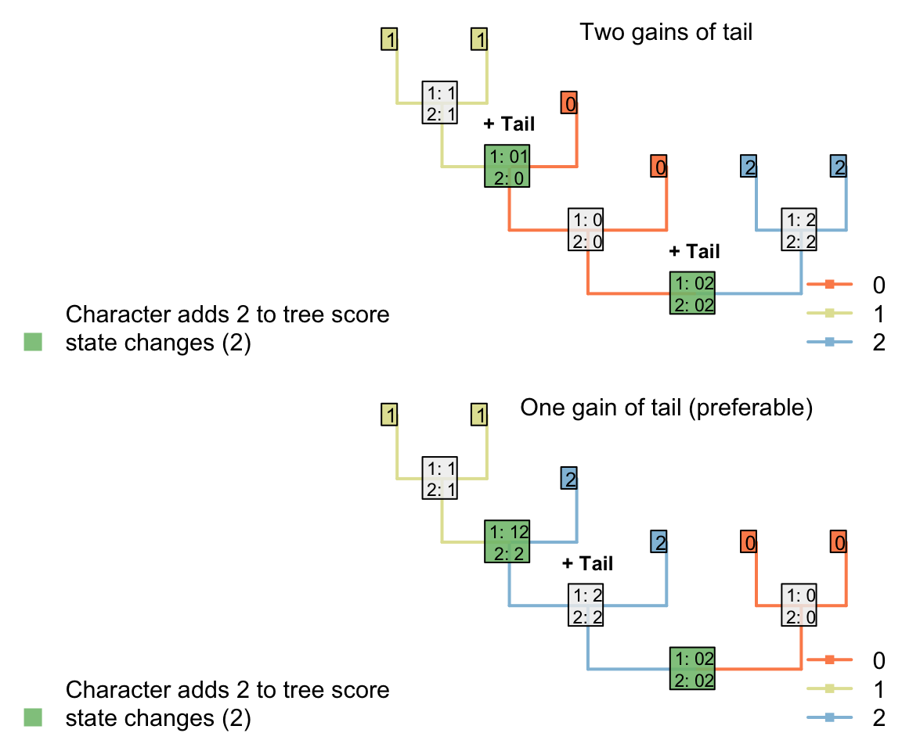
2.5 Sankoff matrices
It would be possible to establish a Sankoff matrix (Sankoff & Cedergren, 1983; Sankoff & Rousseau, 1975) such that a change between absent and red or absent and blue cost more than a change between red and blue, but this effectively up-weights the tail character, and it’s not clear that this is desirable – or how much this extra weight should be (Maddison, 1993).
2.5.1 Symmetric
Consider a character with three ontologically dependent characters:
Presence: Absent / present
Colour: Red / blue
Covering: Scaly / hairy
Shape: Straight / curly
This could be coded as a single transformation series using a Sankoff matrix:
| 0 | 1 | 2 | 3 | . | . | . | 8 | |
|---|---|---|---|---|---|---|---|---|
| (0), absent | 0 | 4 | 4 | 4 | . | . | . | 4 |
| (1), present, red, scaly, straight | 4 | 0 | 1 | 1 | . | . | . | 3 |
| (2), present, red, scaly, curly | 4 | 1 | 0 | 2 | . | . | . | 2 |
| (3), present, red, hairy, straight | 4 | 1 | 2 | 0 | . | . | . | 2 |
| . | . | . | . | . | 0 | . | . | . |
| . | . | . | . | . | . | 0 | . | . |
| . | . | . | . | . | . | . | 0 | . |
| (8), present, blue, hairy, curly | 4 | 3 | 2 | 2 | . | . | . | 0 |
The first thing to note is that each additional ontologically depedent character generates disproportionately more complexity in the Sankoff matrix.
Even if this additional complexity could be handled, the underlying issue remains that losing a tail, which arguably corresponds to a single evolutionary event, is allocated a large cost (here, 4) that grows in line with the number of ontogenetically dependant characters.
2.5.2 Gain and loss asymmetric
At the cost of symmetry, one could argue that the loss of a tail requires a single transformation, whereas the gain requires the addition of a tail and the “setting” of each ontologically dependent character, rendering an asymmetric Sankoff matrix that nevertheless respects triangular inequality (Wheeler, 1993):
| (0) | (1) | (2) | (3) | . | . | . | (8) | |
|---|---|---|---|---|---|---|---|---|
| (0), absent | 0 | 4 | 4 | 4 | . | . | . | 4 |
| (1), present, red, scaly, straight | 1 | 0 | 1 | 1 | . | . | . | 3 |
| (2), present, red, scaly, curly | 1 | 1 | 0 | 2 | . | . | . | 2 |
| (3), present, red, hairy, straight | 1 | 1 | 2 | 0 | . | . | . | 2 |
| . | . | . | . | . | 0 | . | . | . |
| . | . | . | . | . | . | 0 | . | . |
| . | . | . | . | . | . | . | 0 | . |
| (8), present, blue, hairy, curly | 1 | 3 | 2 | 2 | . | . | . | 0 |
Here, though, we encounter a new problem: reconstructions involving very many losses are preferred to those involving a single gain.

2.6 Why counting steps cannot work
The failure of the Sankoff approach illustrates a more general problem: if the only thing that is counted is the number of steps, then trees that imply multiple gains and losses of a principal character are not adequately penalised.
To illustrate this point, consider counting only transitions between applicable states (i.e. steps), but not transitions from the applicable state to the inapplicable state:

Figure 2.2: Tail colour optimization
The number of steps can be minimized by maximizing the number of independent gains of a parent character.
 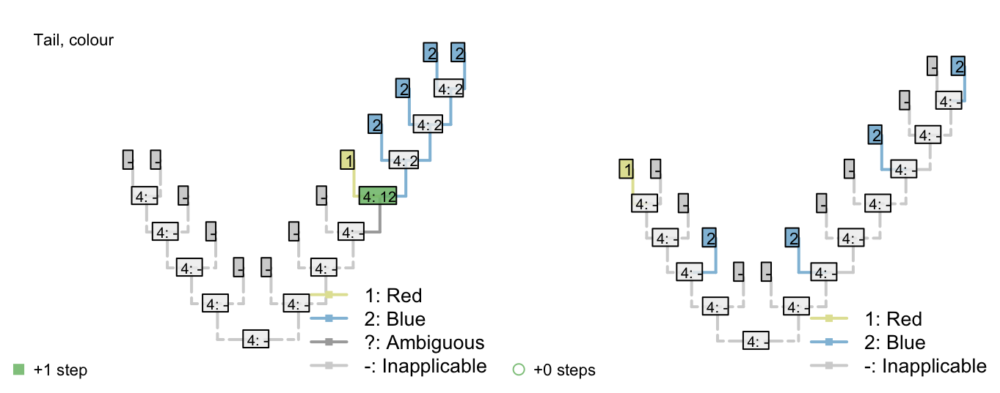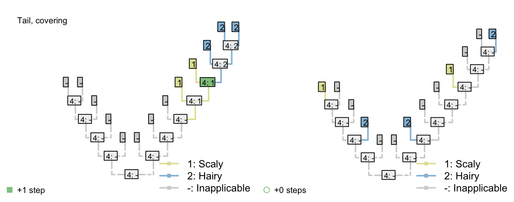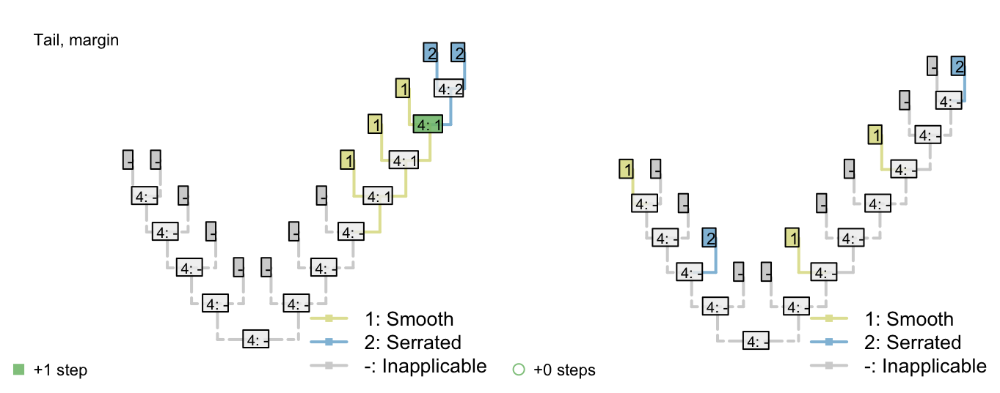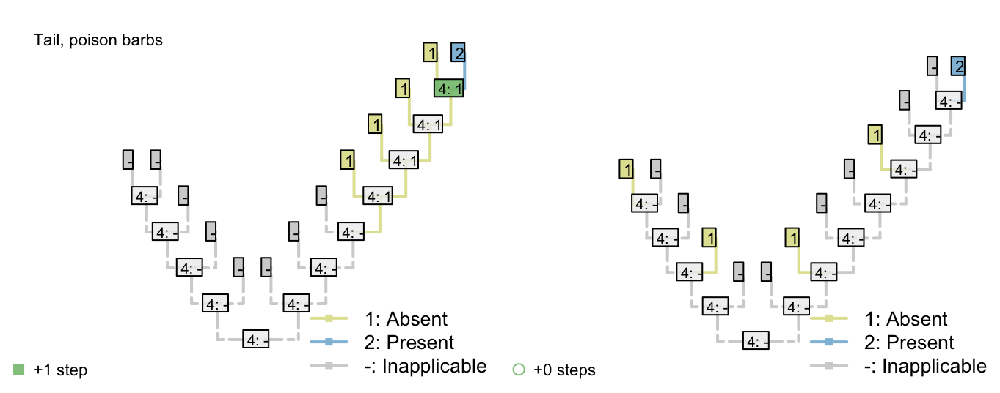
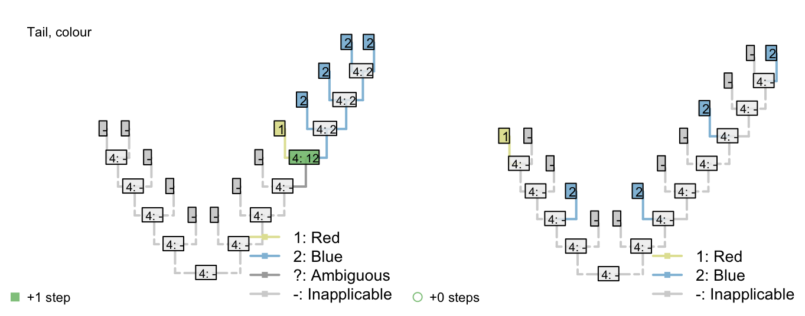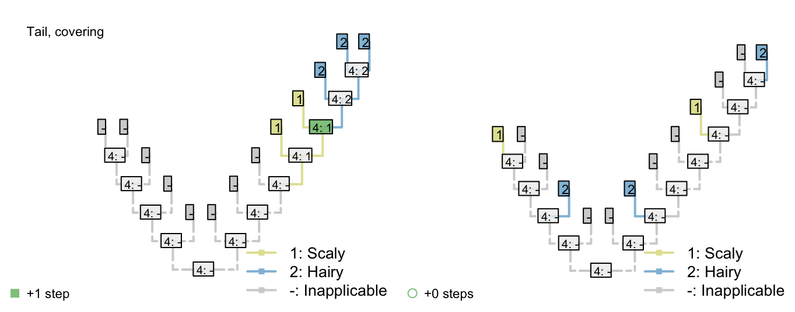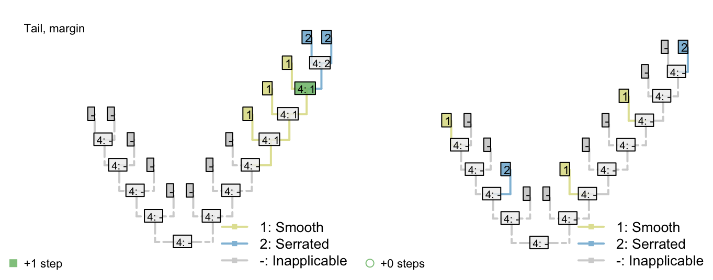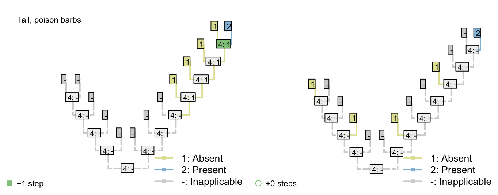
2.7 Conclusion
No coding mechanism can generate consistent and logically meaningful tree scores when employing the Fitch algorithm. A new algorithm is needed: one that counts homoplasies instead of steps.
References
Fitch, W. M. (1971). Toward defining the course of evolution: minimum change for a specific tree topology. Systematic Biology, 20(4), 406–416. doi:10.1093/sysbio/20.4.406
Maddison, W. P. (1993). Missing data versus missing characters in phylogenetic analysis. Systematic Biology, 42(4), 576–581. doi:10.1093/sysbio/42.4.576
Sankoff, D., & Cedergren, R. J. (1983). Simultaneous comparison of three or more sequences related by a tree. In D. Sankoff & J. B. Kruskal (Eds.), Time warps, string edits and macromolecules: The theory and practice of sequence comparison (pp. 253–263). Reading, Massachusetts: Addison-Wesley.
Sankoff, D., & Rousseau, P. (1975). Locating the vertices of a steiner tree in an arbitrary metric space. Mathematical Programming, 9(1), 240–246. doi:10.1007/BF01681346
Wheeler, W. C. (1993). The triangle inequality and character analysis. Molecular Biology and Evolution, 10(3), 707–712.